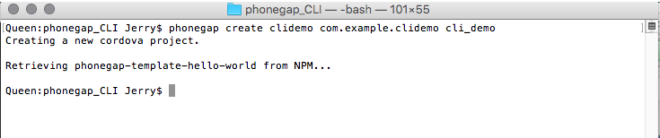
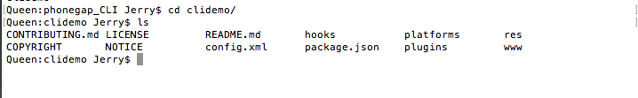
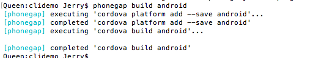
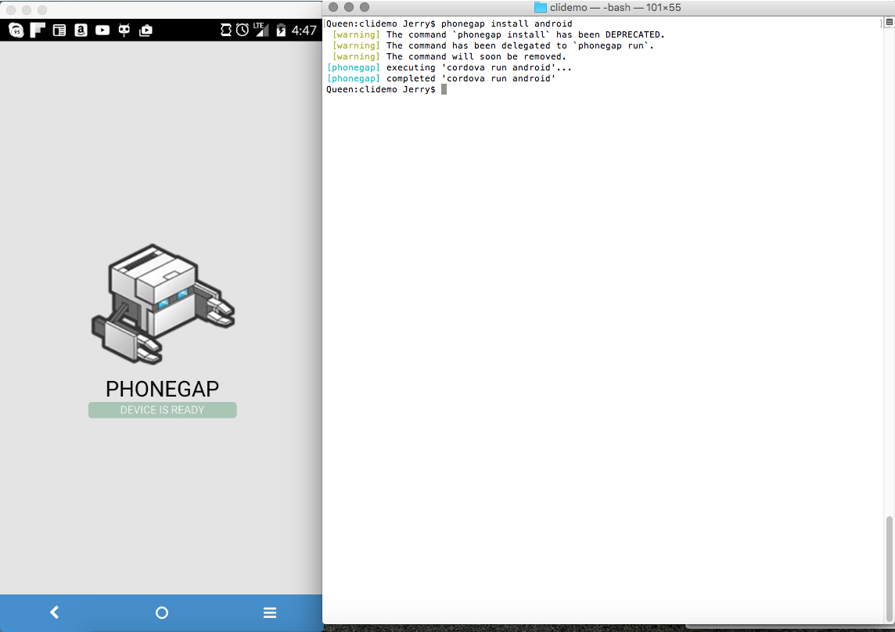
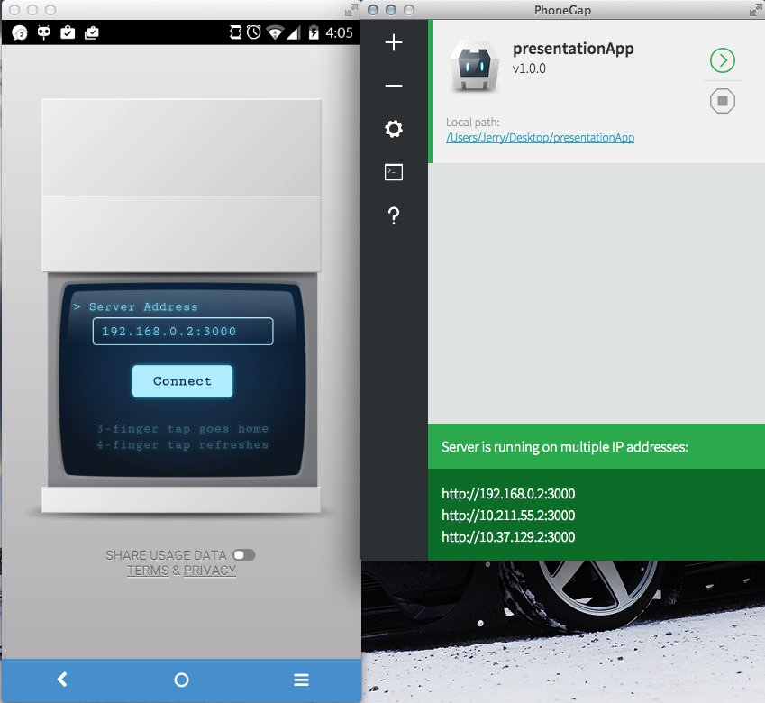
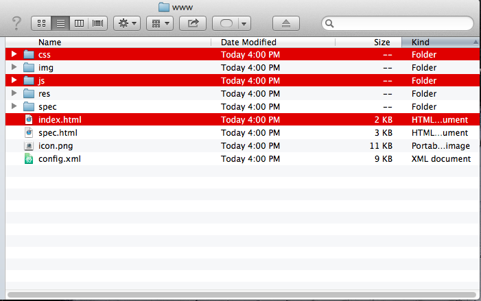
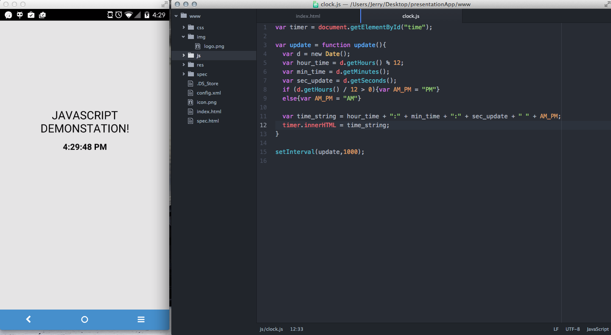
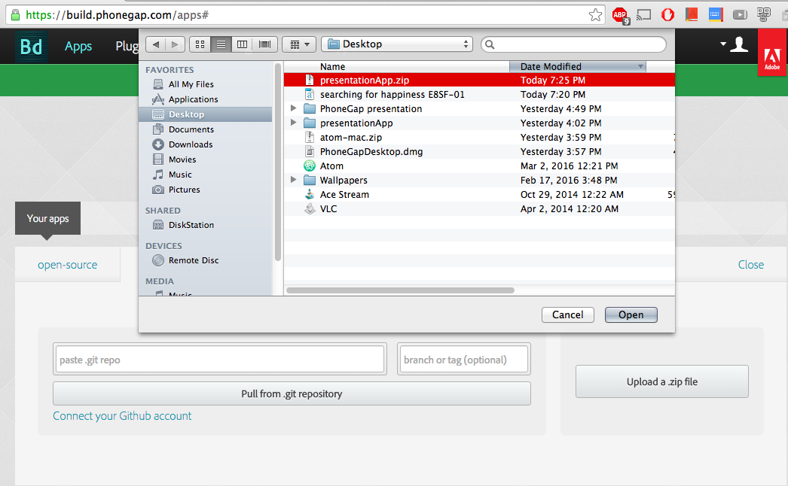
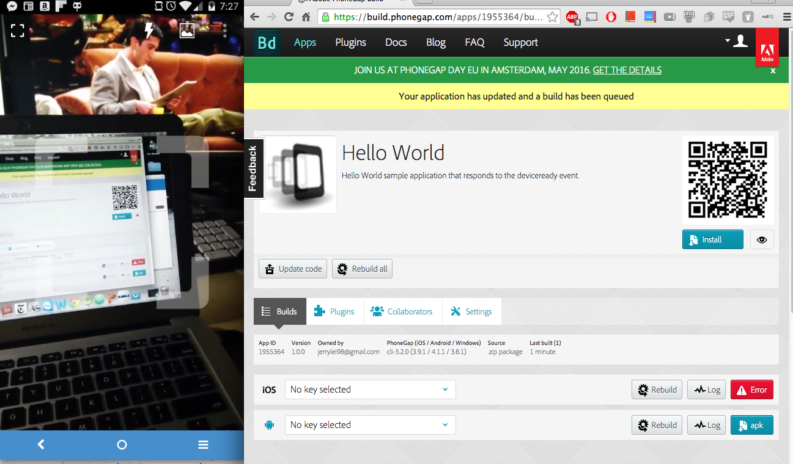
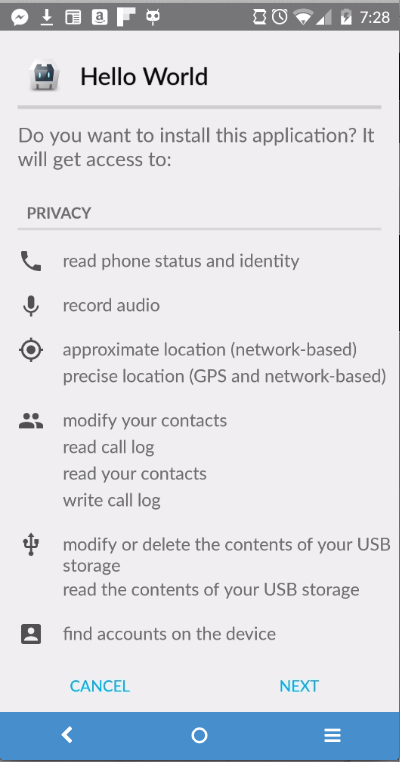

Tools
1. Download node.js
2. Open up terminal.
3. $ sudo npm install - g phonegap
4. $ phonegap create file_name com.example.file_name file_display_text

5. Edit phonegap files

6. Build the app by running
$ phonegap build ios OR
$ phonegap build android

7. Plug in an android device/ios with USB debugging enabled
8. $ phonegap install android

1. Download phonegap desktop application and phonegap android/ios application

2. Create an application with the '+' button on the desktop application. Below are the files created.

3. Demonstration of live updating through same wifi connection.

4. Sample application

1. Go to https://build.phonegap.com/ and create an account if you do not have one already.
2. Upload a zipped version of your application.

3. Scan the QR code on your device.

4. Install the application on your device.
